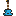

Teaching and learning how to play musical instruments is as old as humanity itself!
I would love to guide you through learning to play your favorite songs, work with other musicians, and make music of your own using an instrument of your choice!
Join me as we work through self-expression, collaboration, problem solving, and of course silliness.
RECOMMENDED
- Ages 5–8 — 30 minutes
- Ages 8+ — 30 minutes to 1 hour
What you can learn
I work with students who want to learn the following instruments:
-
Drums
Some say it's the oldest instrument! It sure is mine. I've been playing drums for 20 years, and I love the opportunity to put that experience into guiding students through their rhythmic journeys! I help folks learn how to coordinate their body and mind to fashion beats, improvise, and just PLAY. I also teach reading standard rhythmic/drum set notation, some rudiments, and playing technique.
-
 Guitar
Guitar
The six-string! My second instrument, which I picked up as an angsty teen longing for some melody and harmony. I treat this instrument as the ultimate songwriting tool. Easy to physically pick up, only a little bit less easy than that to learn some chords. After that, you're off to the races and can play and/or sing along with all your favorite songs! I also teach reading chord charts and tabs, scales and improvisation, and playing technique.
-
Ukulele
The approachable one! This lil friend is one of the easiest ways to get into playing music, owing to its small size and nylon strings, both of which are finger-saving factors. Don't be fooled though! You'll still need to learn some rhythm, chord shapes, and basic technique to start singing along. But that's what I'm here for! You got this!
-

BassOh so you're the kind to play it cool, huh? Well here's a secret: everyone wants a bassist, and if you're not in it for the glory, this instrument is an absolute blast to play. It adds dimension, depth, and of course UMPH to every ensemble it's in, and wielding that power comes with great responsibility. But don't worry, I can help you build up the foundation to BECOME the foundation. We'll learn about the fretboard, basics of theory, and locking in rhythmically to create an ironclad rhythm section. I also teach reading tabs, scales and improvisation, and playing technique.
-
Piano (Beginning)
The all-arounder! Playing keys opens up the whole world of music to the player. You can be the whole orchestra! Lots of people say that this instrument lays a good foundation for playing others, and for good reason: you learn about composition, improvisation, theory, harmony, melody, rhythm, timbre, and expression all in one place. For some, that's overwhelming. For others, it's absolutely freeing. I'm the first to admit that this is not my main instrument, but if you are just looking to try it out to see if it's a good fit, I am more than happy to oblige. Plus, if you get to a level I can no longer support, I'll send you to the best I know: my partner Emily Haswell. I do not teach reading standard notation, but I do teach basics of theory, melody and harmony, playing technique, and improvisation.
-
Synthesizers
Knobs and cables! Weird noises and tones! Is this a soundtrack? Sound effects? Standalone music?... Yes! Synthesizers come in many shapes and sizes and even more different kinds of insides. If you want to demystify technical mumbo jumbo and make something weird, you have come to the right place. I teach on all sorts of concepts of synthesis including oscillators, envelopes, LFOs, effects, CV, MIDI, modular synthesizers, samplers, and more. After some time with me, rows of knobs, buttons, and switches will no longer be scary — they'll be an exciting and inviting canvas for you to paint on! Come on over and get your nerd on.
Wanna look at something else?